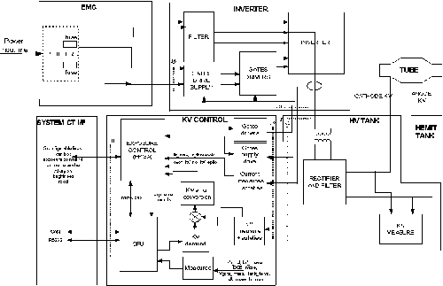

Operating Documentation
Direction 5224328-800, Rev# 5
Dir 5224328-800 LightSpeed 5.X HP60 Limited Access Service
Methods - Adv.
Operating Documentation |
The kV function is mainly controlled by the kV control exposure control function (PPC board).
Illustration 1: kV Function

| NOTE: | For a larger version of the above illustration, click on the pdf icon below: |
Media File 1: kV Function

After power on (LVAC and HVDC), the exposure control FPGA is downloaded by the main CPU and the DSP.
The FPGA then:
configures the real-time lines to the system
drives the inverter gate drive supply to provide the right voltage for the IGBT gates
monitors the DC bus voltage, the IGBT gates voltage
Then the CPU receives the kV, mA, exposure time commands.
When the CPU receives the exposure enable signal (either by a communication message or by a real time hardware line both linked to the prep button), it drives the filament drive and anode rotation.
During this preparation phase, kV reference is applied to the hardware.
Once these functions are ready, the CPU informs the exposure control that the generator is ready for an exposure.
When exposure command goes in its active state,
the CPU:
starts exposure time counter
measures kV demand , kV measure, DC bus, gate voltage, HV tank temperature each 16ms during the exposure
the exposure control:
starts the HV power inverter by driving the IGBTs
put Xray on in its active state
regulates the inverter
monitors the hardware safeties: tube spits, no kV, over kV, HV inverter over current, kV regulation error
When either exposure command goes down, exposure enable goes down, a fatal safety occurs or a timer reaches its final count:
the exposure control :
stops the inverter
puts Xray on in its inactive state
the CPU:
stores tube spit count, exposure count, and exposure parameters
computes the generator thermal status
When any hardware safety occurs during the exposure, :
if it is a tube spit, exposure control stops the inverter 100us, informs the CPU that reads and stores the error, verifies that the maximum number of spits is not reached, and restarts if authorized
if it is a hardware failure, exposure control stops the exposure, reports the error to the CPU that reports the error to the system.
When a measure goes out of range, the CPU:
stops the exposure and reports the error to the system.
stores the error in the generator error log.